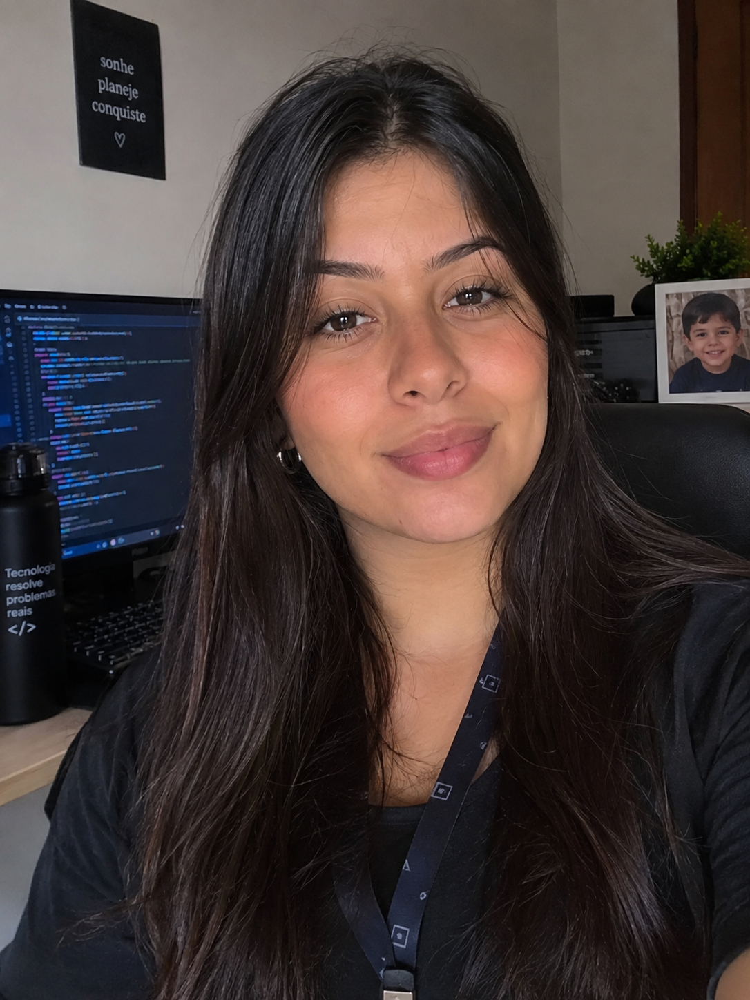

Solteira, 25
Rua Caiçaras 1084. Alvorada
Patos de Minas
E-mail: joanasatelis@gmail.com
LinkdIn: linkedin.com/in/joanasatelis
Celular:(34)992055886
Busco uma oportunidade para desenvolver meus conhecimentos na área de Psicologia, adquirir experiência profissional e contribuir com responsabilidade, dedicação e vontade de aprender.
Estudante de Psicologia, dedicada, responsável e com facilidade para aprender. Tenho interesse em desenvolver minha experiência profissional, aprimorar meus conhecimentos e contribuir de forma positiva no ambiente de trabalho. Sou comunicativa, organizada e comprometida com minhas atividades.